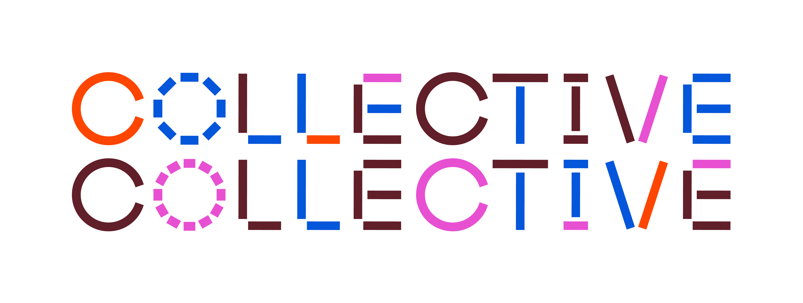
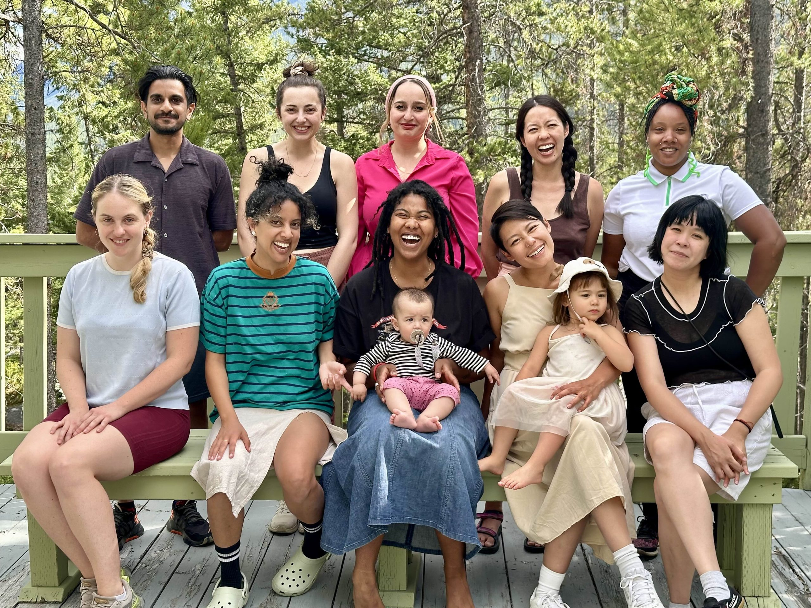
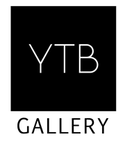
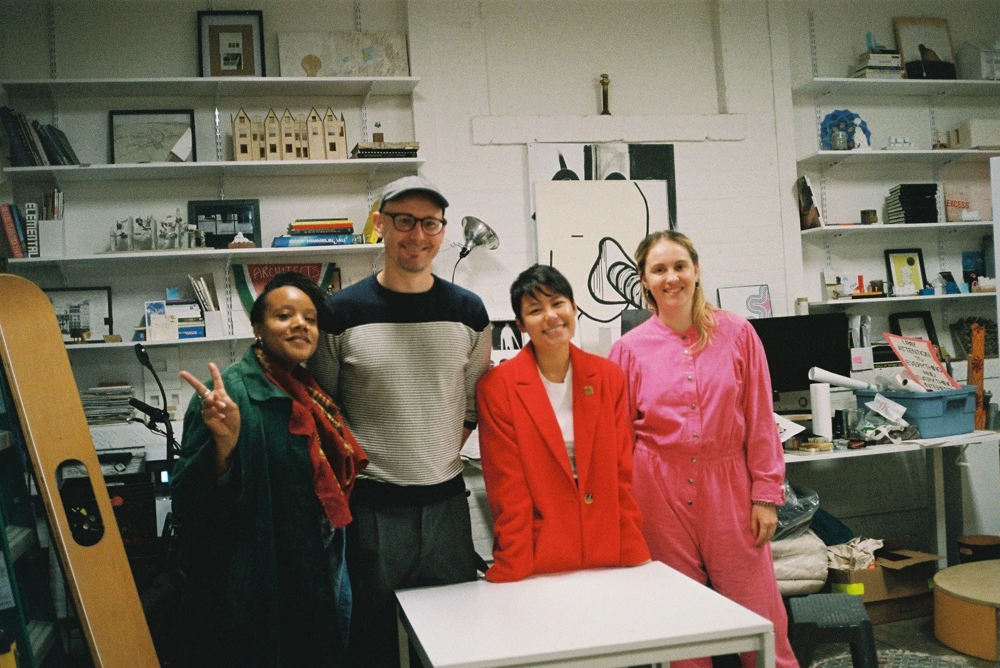
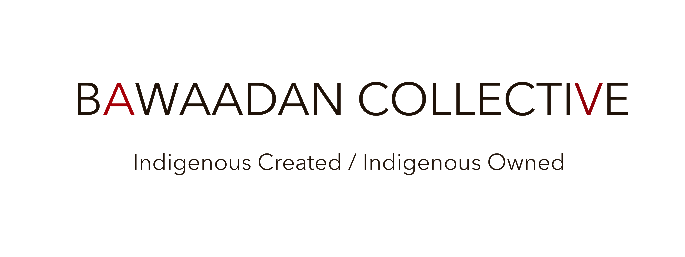
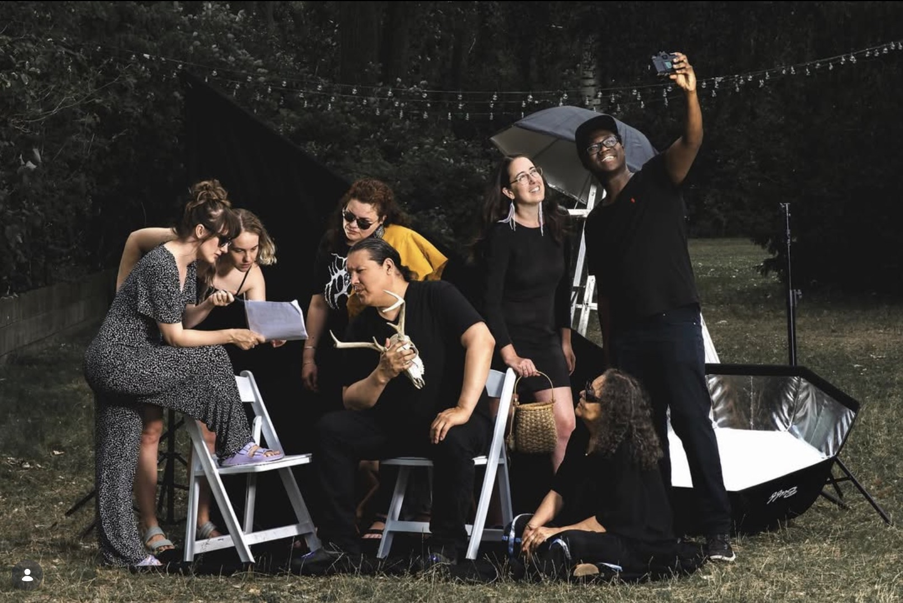
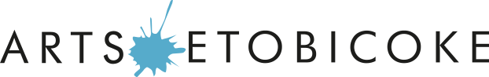
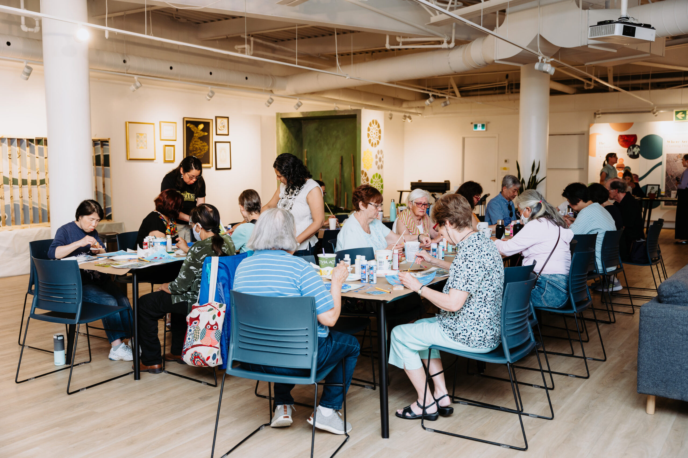

Collaborators


Members of Collective Collective. Top left: Peter Rahul, Jenna Robar, Hanen Nanaa, Alexandra Hong, Geneviève Wallen. Bottom left: Marjan Verstappen, Marina Fathalla, raven lam, Ornette, Marsya Maharani, Aira, Petrina Ng. Not pictured: Lan “Florence” Yee.
Collective Collective is a project between eight visual arts collectives with majority-racialized members in Tkaronto (Toronto, Canada). We collectivized as a response to the systemic racism and exploitative labour conditions in the arts, as well as the interrelated lack of sustainability within the sector.
We work as an artist supercollective that reorients the now-institutionalized movement of institutional critique out of the institutional framework and into collective and social practice. We believe our commitment to long-term relationship building and our drive to test and implement new ways of working together will result in a more equitable ecosystem within the arts and beyond.
Collective Collective is a study and a proposition for models of organizational governance that centers collaborative, non-hierarchical ways of working. It is a dream, a rehearsal for a post-apocalypse, a re-embodiment of all the ways resistance has and continues to happen. Our members are: BAM, Durable Good, Gendai, Guidance Council, MICE, Rice Water, Whippersnapper, and Younger than Beyonce (YTB) Gallery.


YTB is an arts collective supporting artists, curators, and arts workers born after 1981. We provide paid opportunities for emerging practitioners to develop their art careers and grow into artistic leaders. Our work responds to the needs of our generation.
Our Story
In 2009 the New Museum in New York held its first triennial of emerging artists called “Younger Than Jesus,” showcasing work by artists under 33. The show was controversial because it focused on a generation that has been defined by their habits of consumption rather than production. Five years later, Younger Than Beyoncé presents a nomadic, D.I.Y. response to this landmark exhibition, within the context of the Toronto arts community and surrounding neighbourhoods. Our first year as a gallery we partnered with the Daniels Corporation and took over a 3,600 square foot space in Regent Park where we programmed 13 exhibitions working with over 100 artists born after 1981 (or are otherwise emerging) with paid opportunities to develop their art careers and grow into artistic leaders.
Since then, our activities have been increasingly nomadic. We took residency at the Feminist Art Gallery in Parkdale, and collaborated with Margin of Eras Gallery, The Public Studio, the Art Gallery of Ontario, Luminato Festival, the Gardiner Museum, Images Festival, the Art Gallery of Mississauga, The Bentway, and the Art Gallery of York University.
Currently, we are researching methodologies alternative to winning culture, capitalist ideals of productivity, and fast-paced cultural programming. This includes learning collaborative practices and supportive ecosystems in the GTA and internationally. Our approach is built on our commitment to innovative ideas that support 2SLBGTQ+, racialized artists, and others who continue to face multiple barriers to building an art career. We are actively fundraising to build a new sustainable and equitable vibrant arts space to put our research into practice.
Younger than Beyoncé was founded by Michael Magnussen and Marjan Verstappen. Current active members are: Michael Magnussen, Marsya Maharani, Marjan Verstappen, and Geneviève Wallen, with additional board of directors: Alison Cooley, Marina Fathalla, and Robin Fraser.
We are indebted to past members: Rawa Bakhsh, Sebastián Benítez, Alison Cooley, Brette Gabel, Anjuli Rahaman, Joan Wilson, and Han Zhang; to our mentors along the way: Deirdre Logue, Allyson Mitchell, and GUDSKUL Ecosystem; as well as to all the artists who have participated in our programming and made YTB what it is today.
We live and work on the territories of the Mississaugas of the Credit, the Anishinaabe, the Haudenosaunee, and the Wendat peoples.


Bawaadan is an Indigenous-led film and media collective based in southern Ontario. Bawaadan is a large community of creators, supporters, family members, and allies, but the core group consists of Yuma Hester (Anishinaabe — Neyaashiinigmiing, and Ililowuk — Moose Factory), his wife, Ashley Maracle (Kanien’kehaka — Tyendinaga Mohawk Territory — and Irish), Alex Jacobs-Blum (Cayuga, German). With Bawaadan, I have worked on projects ranging from educational videos about Indigenous history in the region, to independently produced short films. Bawaadan is dedicated to developing collaborative approaches to modern artistic, storytelling and film production processes, and to using storytelling to create inclusive, mindful spaces, and better represent Indigenous peoples in the media.


Founded in 1973, Arts Etobicoke is a community arts organization and registered charity providing access to arts and cultural programming in west Toronto. We work to meet the arts and cultural needs of our community by providing education programs, cultural events, gallery exhibitions, and public artwork, while championing local artists and grassroots organizations. I have been facilitating the Seniors Arts Program at Cloverdale Mall for Arts Etobicoke since 2019. Each week offers a different activity — examples include acrylic painting, pencil sketching, oil pastels, clay sculpting, collage, watercolour, and many more.
We also operate out of our Storefront Gallery at 4893a Dundas St W, and animate community spaces across Etobicoke, including parks, community centres, and shopping malls.